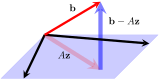
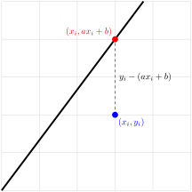

Section7.6Extra Topic: \(QR\) Factorization and Least Square Approximations
One of the main virtues of orthogonal matrices is that they can be easily inverted---the transpose is the inverse. This fact, combined with the factorization theorem in this section, provides a useful way to simplify many matrix calculations.
Definition7.6.1.
Let \(A\) be an \(m \times n\) matrix with independent columns. A QR-factorization of \(A\) expresses it as \(A = QR\) where \(Q\) is \(m \times n\) with orthonormal columns and \(R\) is an invertible and upper triangular matrix with positive diagonal entries.
The importance of the factorization lies in the fact that there are computer algorithms that accomplish it with good control over round-off error, making it particularly useful in matrix calculations.
The factorization is a matrix version of the Gram-Schmidt process. Suppose
is an \(m \times n\) matrix with linearly independent columns \(\mathbf{c}_{1}, \mathbf{c}_{2}, \dots, \mathbf{c}_{n}\text{.}\) The Gram-Schmidt algorithm can be applied to these columns to provide orthogonal columns \(\mathbf{f}_{1}, \mathbf{f}_{2}, \dots, \mathbf{f}_{n}\) where \(\mathbf{f}_{1} = \mathbf{c}_{1}\) and
for each \(k = 2, 3, \dots, n\text{.}\) Now write \(\mathbf{q}_{k} = \frac{1}{\norm{ \mathbf{f}_{k} }}\mathbf{f}_{k}\) for each \(k\text{.}\) Then \(\mathbf{q}_{1}, \mathbf{q}_{2}, \dots, \mathbf{q}_{n}\) are orthonormal columns, and the above equation becomes
has orthonormal columns, and the second factor is an \(n \times n\) upper triangular matrix \(R\) with positive diagonal entries (and so is invertible). We record this in the following theorem.
Theorem7.6.2.QR-Factorization.
Every \(m \times n\) matrix \(A\) with linearly independent columns has a QR-factorization \(A = QR\) where \(Q\) has orthonormal columns and \(R\) is upper triangular with positive diagonal entries.
The matrices \(Q\) and \(R\) in Theorem 7.6.2 are uniquely determined by \(A\text{;}\) we return to this below.
Denote the columns of \(A\) as \(\mathbf{c}_{1}\text{,}\)\(\mathbf{c}_{2}\text{,}\) and \(\mathbf{c}_{3}\text{,}\) and observe that \(\{\mathbf{c}_{1}, \mathbf{c}_{2}, \mathbf{c}_{3}\}\) is independent. If we apply the Gram-Schmidt algorithm to these columns, the result is:
Write \(\mathbf{q}_{j} = \frac{1}{\norm{ \mathbf{f}_{j} }^2}\mathbf{f}_{j}\) for each \(j\text{,}\) so \(\{\mathbf{q}_{1}, \mathbf{q}_{2}, \mathbf{q}_{3}\}\) is orthonormal. Then (7.6.1) precedingTheorem 7.6.2 gives \(A = QR\) where
The reader can verify that indeed \(A = QR\text{.}\)
If a matrix \(A\) has independent rows and we apply QR-factorization to \(A^{T}\text{,}\) the result is:
Corollary7.6.4.
If \(A\) has independent rows, then \(A\) factors uniquely as \(A = LP\) where \(P\) has orthonormal rows and \(L\) is an invertible lower triangular matrix with positive main diagonal entries.
Since a square matrix with orthonormal columns is orthogonal, we have:
Theorem7.6.5.
Every square invertible matrix \(A\) has factorizations \(A = QR\) and \(A = LP\) where \(Q\) and \(P\) are orthogonal, \(R\) is upper triangular with positive diagonal entries, and \(L\) is lower triangular with positive diagonal entries.
We now take the time to prove the uniqueness of the QR-factorization.
Theorem7.6.6.
Let \(A\) be an \(m \times n\) matrix with independent columns. If \(A = QR\) and \(A = Q_{1}R_{1}\) are QR-factorizations of \(A\text{,}\) then \(Q_{1} = Q\) and \(R_{1} = R\text{.}\)
in terms of their columns, and observe first that \(Q^TQ = I_{n} = Q_{1}^TQ_{1}\) because \(Q\) and \(Q_{1}\) have orthonormal columns. Hence it suffices to show that \(Q_{1} = Q\) (then \(R_{1} = Q_{1}^TA = Q^TA = R\)). Since \(Q_{1}^TQ_{1} = I_{n}\text{,}\) the equation \(QR = Q_{1}R_{1}\) gives \(Q_{1}^TQ = R_{1}R^{-1}\text{;}\) for convenience we write this matrix as
This matrix is upper triangular with positive diagonal elements (since this is true for \(R\) and \(R_{1}\)), so \(t_{ii} \gt 0\) for each \(i\) and \(t_{ij} = 0\) if \(i \gt j\text{.}\) On the other hand, the \((i, j)\)-entry of \(Q_{1}^TQ\) is \(\mathbf{d}_{i}^T\mathbf{c}_{j} = \mathbf{d}_{i} \cdot \mathbf{c}_{j}\text{,}\) so we have \(\mathbf{d}_{i} \cdot \mathbf{c}_{j} = t_{ij}\) for all \(i\) and \(j\text{.}\) But each \(\mathbf{c}_{j}\) is in \(\mbox{span}\{\mathbf{d}_{1}, \mathbf{d}_{2}, \dots, \mathbf{d}_{n}\}\) because \(Q = Q_{1}(R_{1}R^{-1})\text{.}\) We know how to write a vector as a linear combination of an orthonormal basis:
whence \(\mathbf{c}_{1} = \mathbf{d}_{1}\text{.}\) But then we have \(t_{12} = \mathbf{d}_{1} \cdot \mathbf{c}_{2} = \mathbf{c}_{1} \cdot \mathbf{c}_{2} = 0\text{,}\) so the second equation becomes \(\mathbf{c}_{2} = t_{22}\mathbf{d}_{2}\text{.}\) Now a similar argument gives \(\mathbf{c}_{2} = \mathbf{d}_{2}\text{,}\) and then \(t_{13} = 0\) and \(t_{23} = 0\) follows in the same way. Hence \(\mathbf{c}_{3} = t_{33}\mathbf{d}_{3}\) and \(\mathbf{c}_{3} = \mathbf{d}_{3}\text{.}\) Continue in this way to get \(\mathbf{c}_{i} = \mathbf{d}_{i}\) for all \(i\text{.}\) This proves that \(Q_{1} = Q\text{.}\)
Subsection7.6.1QR-Algorithm for approximating eigenvalues
We learned about an iterative method for computing eigenvalues in the preceding chapter. We also mentioned that a better method for approximating the eigenvalues of an invertible matrix \(A\) depends on the QR-factorization of \(A\text{.}\) While it is beyond the scope of this book to pursue a detailed discussion of this method, we give an example and conclude with some remarks on the QR-algorithm.
The QR-algorithm uses QR-factorization repeatedly to create a sequence of matrices \(A_{1} =A, A_{2}, A_{3}, \dots,\) as follows:
Define \(A_{1} = A\) and factor it as \(A_{1} = Q_{1}R_{1}\text{.}\)
Define \(A_{2} = R_{1}Q_{1}\) and factor it as \(A_{2} = Q_{2}R_{2}\text{.}\)
Define \(A_{3} = R_{2}Q_{2}\) and factor it as \(A_{3} = Q_{3}R_{3}\text{.}\)
\(\displaystyle \vdots\)
In general, \(A_{k}\) is factored as \(A_{k} = Q_{k}R_{k}\) and we define \(A_{k + 1} = R_{k}Q_{k}\text{.}\) Then \(A_{k + 1}\) is similar to \(A_{k}\) [in fact, \(A_{k+1} = R_{k}Q_{k} = (Q_{k}^{-1}A_{k})Q_{k}\)], and hence each \(A_{k}\) has the same eigenvalues as \(A\text{.}\) If the eigenvalues of \(A\) are real and have distinct absolute values, the remarkable thing is that the sequence of matrices \(A_{1}, A_{2}, A_{3}, \dots\) converges to an upper triangular matrix with these eigenvalues on the main diagonal. [See below for the case of complex eigenvalues.]
The example below goes through the whole QR business for a \(2\times 2\)-matrix.
and so is approximating the eigenvalues \(2\) and \(-1\) on the main diagonal.
Subsection7.6.2Least-Squares Approximation
Often an exact solution to a problem in applied mathematics is difficult or impossible to obtain. However, it is usually just as useful to find an approximation to a solution. In particular, finding ``linear approximations" is a powerful technique in applied mathematics. One basic case is the situation where a system of linear equations has no solution, and it is desirable to find a ``best approximation" to a solution to the system.
We begin by defining the ``best approximation’’ in a natural way, and showing that computing the best approximation reduces to solving a related system of linear equations called the normal equations. Next, we demonstrate a common application where a collection of data points is approximated by a curve.
We conclude this section by showing that \(QR\)-factorization provides us with a more efficient way to solve the normal equations and compute the best approximation.
Consider the matrix equation \(A\mathbf{x}=\mathbf{b}\text{.}\) A quick examination of the last two rows should convince you that this equation has no solutions. In other words, \(\mathbf{b}\) is not in the span of the columns of \(A\text{.}\) If \(\mathbf{z}\) were an exact solution to \(A\mathbf{x}=\mathbf{b}\text{,}\) then \(\mathbf{b}-A\mathbf{z}\) would be \(\mathbf{0}\text{.}\)
Since the equation does not have a solution, we will attempt to find the next best thing to a solution by finding \(\mathbf{z}\) such that \(\norm{\mathbf{b}-A\mathbf{z}}\) is as small as possible. The quantity
is called the error. The following GeoGebra interactive will help you understand the geometry behind finding \(\mathbf{z}\text{.}\) RIGHT-CLICK and DRAG to rotate the image for a better view.
Figure7.6.8.
Record your best guess for \(\mathbf{z}\) -- you will have a chance to check your answer in Example 7.6.10. Now, here is a few questions to keep you on yor toes.
Problem7.6.9.
What did you discover about the geometry of minimizing \(\norm{\mathbf{b}-A\mathbf{z}}\text{?}\) Select all that apply.
\(\mathbf{z}\) is orthogonal to the plane spanned by the columns of \(A\text{.}\)
\(\norm{\mathbf{b-A\mathbf{z}}}\) is orthogonal to \(\text{col}(A)\text{.}\)
\(\mathbf{b-A\mathbf{z}}\) is orthogonal to \(\text{col}(A)\text{.}\)
\(A\mathbf{z}\) is orthogonal to \(\text{col}(A)\text{.}\)
\(A\mathbf{z}\) is an orthogonal projection of \(\mathbf{b}\) onto \(\text{col}(A)\text{.}\)
Answer.
Option (c) and (d).
Our geometric observations will help us develop a method for finding \(\mathbf{z}\) .
Suppose \(A\) is an \(m\times n\) matrix, and \(\mathbf{b}\) is a column vector in \(\R^m\text{.}\) Consider the matrix equation \(A\mathbf{x}=\mathbf{b}\text{.}\) If this equation does not have a solution, we can attempt to find a best approximation by finding \(\mathbf{z}\) which minimizes the error, \(\norm{\mathbf{b}-A\mathbf{z}}\text{.}\) The expression \(\norm{\mathbf{b}-A\mathbf{z}}\) is also sometimes called the residual.
The error (or the residual) is given in terms of a vector norm. Recall that our definition of the norm involves the sum of squares of the vector components. When we minimize the norm, we minimize the sum of squares. This is why the method we are describing is often referred to as least squares. We will explore this idea further later in this section.
In the case when \(\text{col}(A)\) is a subspace of \(\R^3\text{,}\) we can see geometrically that \(\mathbf{z}\) is the best approximation if and only if \(A\mathbf{z}\) is an orthogonal projection of \(\mathbf{b}\) onto \(\text{col}(A)\text{,}\) and the error is the magnitude of \(\mathbf{b}-A\mathbf{z}\text{,}\) as shown below.

What we observed above, holds in general. We will use this fact to find \(\mathbf{z}\text{.}\) Every vector in \(\text{col}(A)\) can be written in the form \(A\mathbf{x}\) for some \(\mathbf{x}\) in \(\R^m\text{.}\) Our goal is to find \(\mathbf{z}\) such that \(A\mathbf{z}\) is the orthogonal projection of \(\mathbf{b}\) onto \(\text{col}(A)\text{.}\)
By Corollary 7.2.16, every vector \(A\mathbf{x}\) in \(\text{col}(A)\) is orthogonal to \(\mathbf{b}-A\mathbf{z}\text{.}\) This means \(\mathbf{b}-A\mathbf{z}\) is in the orthogonal complement of \(\text{col}(A)\text{,}\) which is \(\text{null}(A^T)\text{.}\)
Since \(\mathbf{b}-A\mathbf{z}\) is normal to the subspace \(\text{col}(A)\text{,}\) we call the system in (9.6.1) the normal equations for\(\mathbf{z}\text{.}\) If \(A^TA\) is invertible, then we can write
Compare this answer to your guess in Exploration 7.6.1. If your guess was correct, nice job! If your guess was different, try setting \(\mathbf{z}\) to the correct answer and use the GeoGebra interactive in Exploration 7.6.1 to examine the geometry of the problem.
We now come back to the question of when \(A^TA\) is invertible.
Theorem7.6.11.
If columns of matrix \(A\) are linearly independent, then \(A^TA\) is invertible.
Proof.
Let \(A\) be a matrix with linearly independent columns. We will show that \(\left(A^TA\right)\mathbf{x}=\mathbf{0}\) has only the trivial solution. For \(\mathbf{x}\text{,}\) a solution of \(A^TA\mathbf{x}=\mathbf{0}\text{,}\) we have
The average number \(g\) of goals per game scored by a hockey player seems to be related linearly to two factors: the number \(x_1\) of years of experience and the number \(x_2\) of goals in the preceding 10 games.
The data on the following page were collected on four players. Find the linear function \(g=a_0+a_1x_1+a_2x_2\) that best fits the data.
Hence the best-fitting function is \(g=0.14+0.09x_1+0.08x_2\text{.}\)
Subsection7.6.3Application of Least Squares to Curve Fitting
In practice, one can fit a function to a set of data points, so that the graph of the function passes through each of the points as well as possible. However, this is sometimes impossible and may not even be desirable (overfitting). In this section, we will learn how to approximate a collection of data points with a line (or a curve) that fits the ``trend" of the points. We will start with data that fit a linear pattern.
Exploration7.6.2.
Consider the points \((1,1)\text{,}\)\((2, 3)\) and \((4,4)\text{.}\) These points do not lie on a straight line, but they have a general upward linear trend. (Typically there would be many more points to consider, but we will limit our exploration to what we can do by hand.) Our goal is to find a line that fits these points as closely as possible.
We are looking for a function \(f\) of the form \(f(x)=ax+b\) such that the following infeasible system is satisfied as closely as possible
We found this fit by minimizing \(\norm{\mathbf{b}-A\mathbf{z}}\text{.}\) We will now investigate the meaning of this expression in relation to the line and the data points.
Observe that each entry of \(\mathbf{b}-A\mathbf{z}\) is the signed vertical distance between a particular point and the line. Instead of computing the error, \(\norm{\mathbf{b}-A\mathbf{z}}\text{,}\) we compute \(\norm{\mathbf{b}-A\mathbf{z}}^2\) to avoid the square root.
Minimizing \(\norm{\mathbf{b}-A\mathbf{z}}\) also minimizes \(\norm{\mathbf{b}-A\mathbf{z}}^2\text{.}\) Therefore, what we have minimized is the sum of squares of the vertical distances between the data points and the line. The following GeoGebra interactive will help you explore this idea.
Figure7.6.15.
In Exploration 7.6.2 we discovered that \(\norm{\mathbf{b}-A\mathbf{z}}^2\) is the sum of squares of vertical distances between the given data points and the proposed line.
By minimizing \(\norm{\mathbf{b}-A\mathbf{z}}\text{,}\) we minimize the sum of squares of vertical distances. This observation holds in general. Given a collection of points
A geometric interpretation of \(y_i-(ax_i+b)\) is shown below.

The line we obtain in this fashion is called a line of best fit or a trendline, and the method we used is referred to as the method of least squares. We can apply the method of least squares to find best fitting non-linear functions.
Example7.6.16.
Find the least squares approximating quadratic polynomial of the form \(f(x)=ax^2+bx+c\) for the following points.
It turns out that \(A^TA\) is invertible, so it is easy to solve for \(\mathbf{z}\text{.}\) You can use technology to accomplish this. Feel free to use any online tool or Mathlab for this for practice. You arrive at the solution
Therefore, the quadratic function of best fit is given by \(f(x)=0.26x^2+0.2x+1.15\text{.}\) You can see the graph and the points shown below. Before the end of this section we will return to this problem with a more computationally efficient approach.
Example7.6.17.
Given the data points \((-1, 0)\text{,}\)\((0,1)\text{,}\) and \((1,4)\text{,}\) find the least squares approximating function of the form \(f(x)=ax+b2^x\text{.}\)
Answer.
We are looking for an approximate solution to the system of equations
Since \(R\) is invertible, then \(R^T\) also has an inverse, and multiplying on the left by it yields
\begin{equation*}
R\mathbf{z} = Q^T b.
\end{equation*}
This last equation is easily solved by back-substitution, since \(R\) is upper triangular. This greatly reduces the amount of computations we need to make, as we will observe by using Octave in our final example of the section.
Exercises7.6.5Exercises
Exercise Group.
In each case find the QR-factorization of \(A\text{.}\)
If \(R\) is upper triangular and invertible, show that there exists a diagonal matrix \(D\) with diagonal entries \(\pm 1\) such that \(R_{1} = DR\) is invertible, upper triangular, and has positive diagonal entries.
6.
If \(A\) has independent columns, let \\ \(A = QR\) where \(Q\) has orthonormal columns and \(R\) is invertible and upper triangular. (Some authors do not require a \(QR\)-factorization to have positive diagonal entries.) Show that there is a diagonal matrix \(D\) with diagonal entries \(\pm 1\) such that \(A = (QD)(DR)\) is the QR-factorization of \(A\text{.}\)
If \(A\) is symmetric, show that each matrix \(A_{k}\) in the QR-algorithm is also symmetric. Deduce that they converge to a diagonal matrix.
Answer.
Use induction on \(k\text{.}\) If \(k = 1\text{,}\)\(A_{1} = A\text{.}\) In general \(A_{k+1} = Q_{k}^{-1}A_{k}Q_{k} = Q_{k}^{T}A_{k}Q_{k}\text{,}\) so the fact that \(A_{k}^{T} = A_{k}\) implies \(A_{k+1}^{T} = A_{k+1}\text{.}\) The eigenvalues of \(A\) are all real, so the \(A_{k}\) converge to an upper triangular matrix \(T\text{.}\) But \(T\) must also be symmetric (it is the limit of symmetric matrices), so it is diagonal.
Given a matrix \(A\text{,}\) let \(A_{k}\text{,}\)\(Q_{k}\text{,}\) and \(R_{k}\text{,}\)\(k \geq 1\text{,}\) be the matrices constructed in the QR-algorithm. Show that \(A_{k} = (Q_{1}Q_{2} \cdots Q_{k})(R_{k} \cdots R_{2}R_{1})\) for each \(k \geq 1\) and hence that this is a QR-factorization of \(A_{k}\text{.}\)
Hint.
Show that \(Q_{k}R_{k} = R_{k-1}Q_{k-1}\) for each \(k \geq 2\text{,}\) and use this equality to compute \((Q_{1}Q_{2} \cdots Q_{k})(R_{k} \cdots R_{2}R_{1})\) ``from the centre out.’’ Use the fact that \((AB)^{n+1} = A(BA)^{n}B\) for any square matrices \(A\) and \(B\text{.}\)
12.
Find the best approximation to a solution to the system of equations.
Find a linear function of best fit for each of the following sets of data points. Examine how well your line fits the points by typing the equation of the line into the Desmos window.
If \(A\) is an \(m \times n\) matrix, it can be proved that there exists a unique \(n \times m\) matrix \(A^{\#}\) satisfying the following four conditions: \(AA^{\#}A = A\text{;}\)\(A^{\#}AA^{\#} = A^{\#}\text{;}\)\(AA^{\#}\) and \(A^{\#}A\) are symmetric. The matrix \(A^{\#}\) is called the Moore-Penrose inverse.
If \(A\) is square and invertible, show that \(A^{\#} = A^{-1}\text{.}\)
If \(\text{rank} A = m\text{,}\) show that \(A^{\#} = A^{T}(AA^{T})^{-1}\text{.}\)
If \(\text{rank} A = n\text{,}\) show that \(A^{\#} = (A^{T}A)^{-1}A^{T}\text{.}\) (Notice the appearance of the Moore-Penrose inverse arrived when we solve the normal equations, arriving at Equation (7.6.3)).